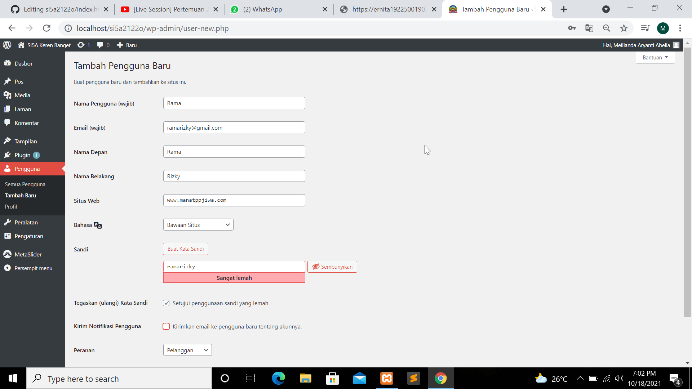
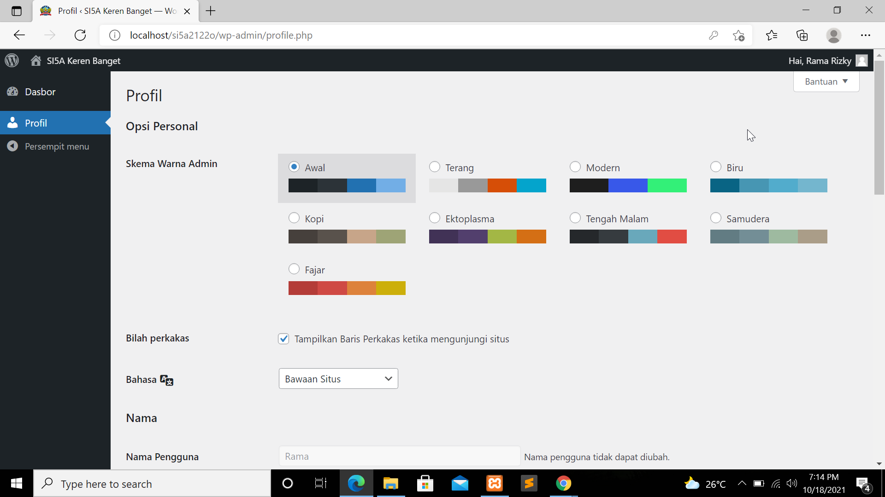
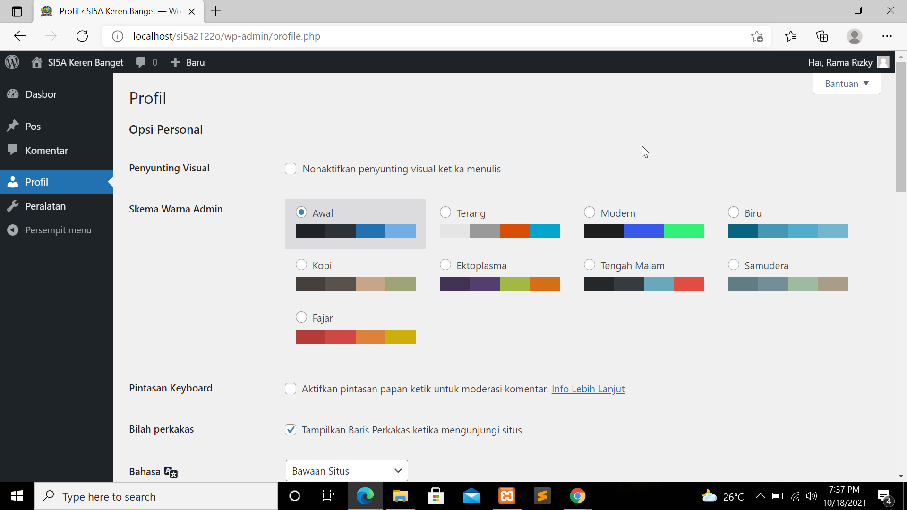
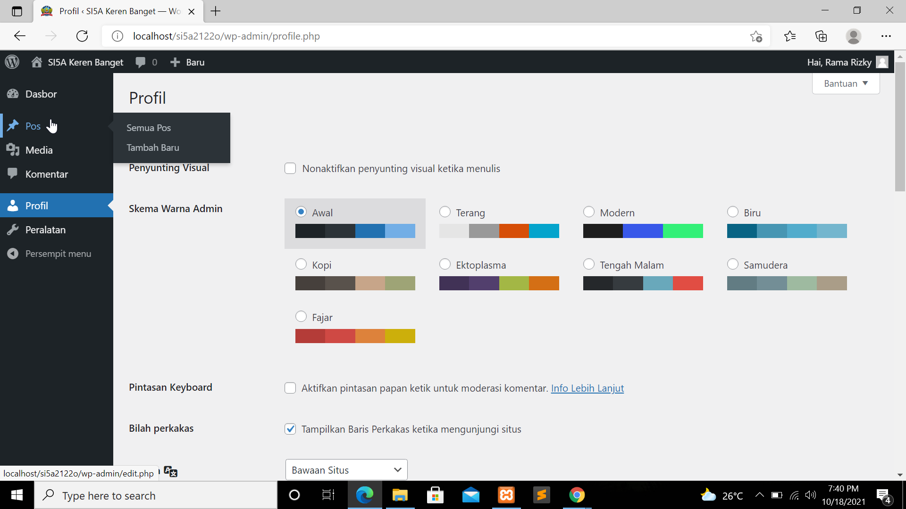
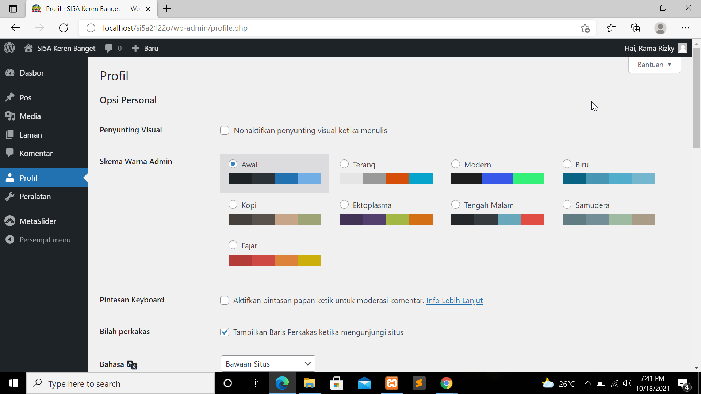
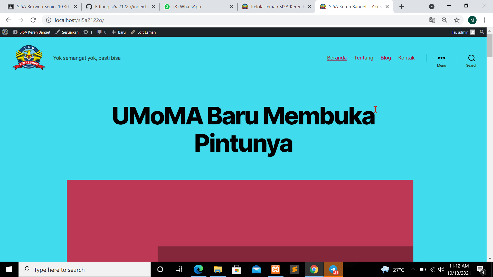
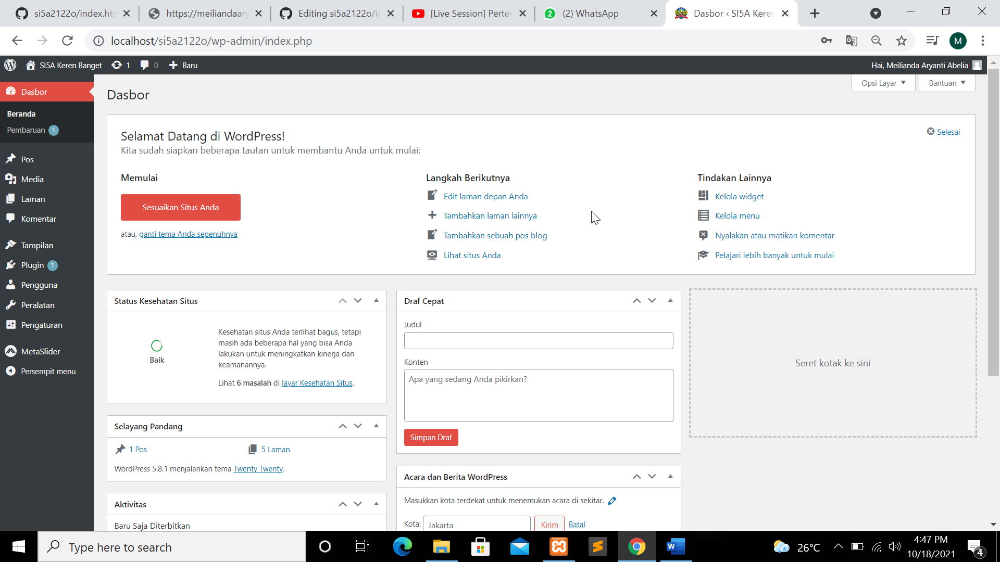

NIM : 1922500195
Nama : Meilianda Aryanti Abelia
Kelompok : SI5A
Hasil kesimpulan pertemuan 2 yang saya ambil adalah:
- Di dalam htdocs, mesti ada folder si5a2122o, sehingga pada browser bisa diakses http://localhost/si5a2122o
- Jika object not found (404), maka cek dulu nama folder antara htdocs dengan yang diketik dilocalhost
- Jika ada tulisan error establishing database connection, cek dulu apakah mysql sudaah running pada xampp control panel
- Jika sudah running, buka wp-config.php pada folder si5a2122o, dan cek db_name, db_nama ini pastikan ada di phpmyadmin
- Jika pada phpmyadmin belum ada nama databasenya, maka import dulu file sql bahan pertemuan ke-2 (hasil pertemuan 1)
- wordpress memiliki 2 sisi, 1 tampilan backend (untuk admin/dashboard) dan 1 nya lagi tampilan front end (untuk pengunjung/client area)
- Untuk backend, harus login dulu di alamat http://localhost/si5a2122o/wp-admin
- Di halaman pengguna, klik profil (tempat untuk mengisi atau memperbaharui profil)
- Untuk data user baru(role,ubah,hapus) dengan cara klik pengguna pilih tambah baru dan di isi sesuai dengan nama pengguna yang di inginkan (nama pengguna usahakan tidak mengandung spasi)

- Peranan atau role didalam wordpress dibagi menjadi beberapa bagian:
- Pelanggan, adalah peranan yang paling rendah. Kemampuannya hanya bisa mengupdate profil dan passwordnya sendiri.
Tampilan untuk peranan pelanggan

- Kontributor, bisa melihat komen, peralatan, bisa melihat semua pos, bisa juga menambah tulisan dan harus mendapatkan persetujuan dari editor

Tampilan untuk peranan kontributor
- Penulis, udah dipercaya oleh admin untuk mengisi konten baru tanpa perlu ditinjau.
Tampilan untuk peranan penulis

- Editor, tangan kanan administrator, seperti orang kepercayaan admin.
Tampilan untuk editor

- Untuk pengaturan setting dilihat di pengaturan umum, semisal mau mengubah konten kalo bosen
Berikut tampilan halaman web setelah di restore:

Berikut tampilan front end:
Berikut tampilan back end:
